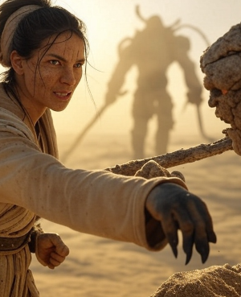
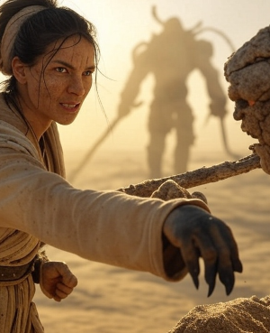

The Desert Wanderer
 

Profile
Name: Zara
Role: Ally, Guide of the Sunken Sands
Gender: Female
Age: 38
Appearance
Wiry and tough—cracked, sun-weathered skin over a sinewy frame. Short black hair dust-streaked, tied with beige cloth. Amber eyes gleam like sand, clad in a sand-colored robe with bone shards, her Water Flask dented at her hip.
Personality
Resilient and dry—Zara’s arid humor steadies her resolve, her warmth buried beneath a jaded shell. Clever and enduring, her steady voice cuts through the sands’ oppression, a rock for Aria’s fire.
Abilities
Health: 85 | Stamina: 65 | Essence: 10 | Agility: 9 | Resistance: 8
Staff Bash: Solid strikes (10 damage, 6 Stamina)—cracks with sure force.
Sand Blind: Dust throw (8 damage, 5 Stamina)—blinds foes with grit.
Water Sip: Heals (+15 Health)—scarce aid from her Flask.
Background
Born in the Sunken Sands, Zara lost her father to a golem at 14, inheriting a Sand Staff and a survivor’s creed. She’s roamed since, claiming Sandwalker’s Boots—Aria’s fiery hair sparks a legacy at the Water Gear.
Role
Zara guides Aria’s desert trials—her Boots and steady aid shape her path, a jaded mirror whose endurance bolsters Aria’s fiery resolve through the sands’ crucible.